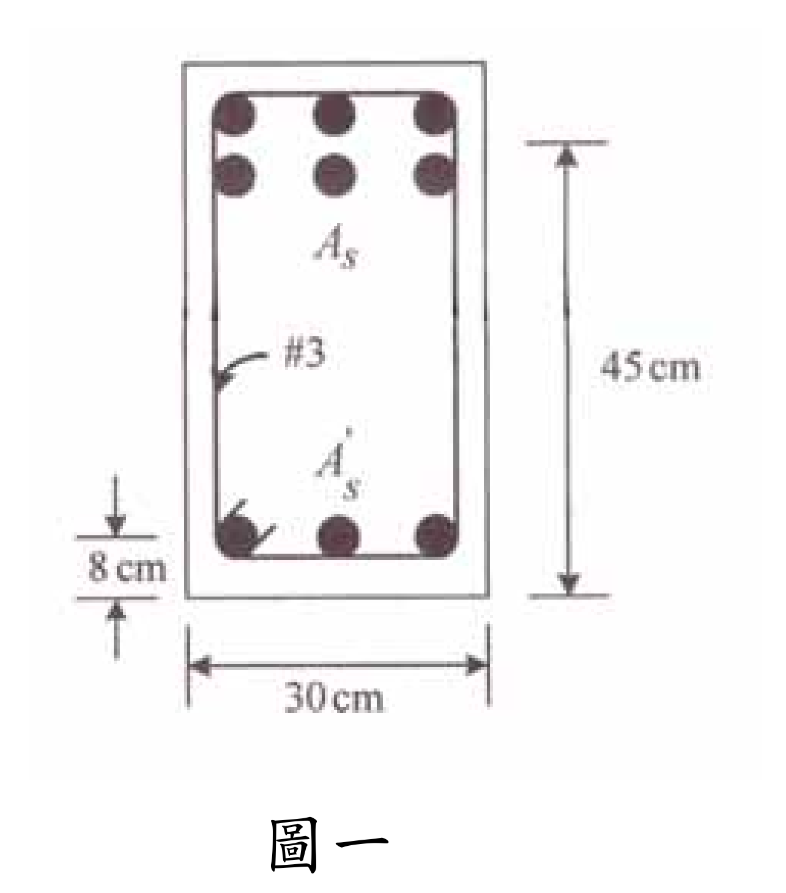
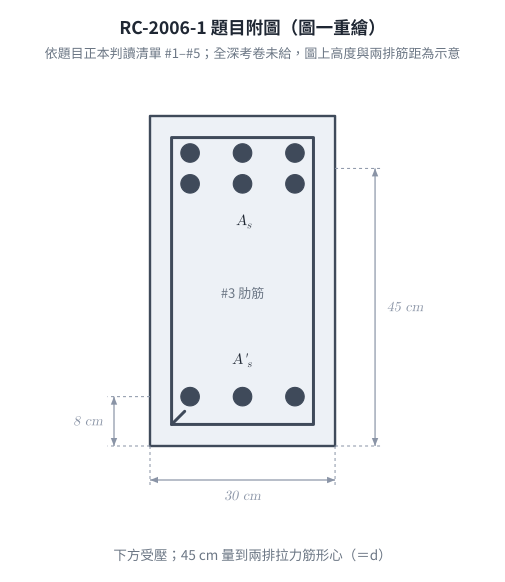
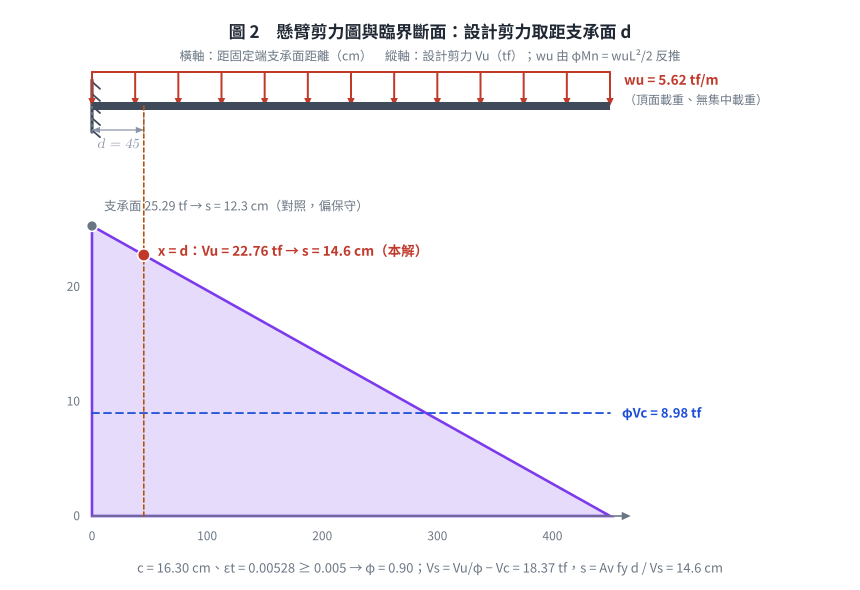

📄 題目正本：考卷原文・附圖・判讀清單（已確認）
RC-2006-1 題目正本
本檔只記錄考卷上寫了什麼、圖上畫了什麼，不含任何解法。解析見同資料夾
RC-2006-1.md。
判讀清單已經使用者確認（凍結）；本檔原則上不再修改（改動須回考卷原圖並記 log）。
| 項目 | 內容 |
|---|---|
| 考卷 | raw/exams/RC-2006_鋼筋混凝土設計與預力.pdf 第 1 頁（正面），第一題 |
| 考年 | 民國 95 年（2006） |
| 配分 | 40 分 |
| 附圖 | RC-2006-1-fig-2.png（圖一：梁斷面；2026-11-15 由考卷重新擷取 500 dpi）；既有 RC-2006-1-fig-1.png 為同一圖，斷面頂部壓有滑鼠游標，保留不刪 |
| 判讀狀態 | 已確認（2026-11-15 使用者確認；影響答案項目使用者選擇：#1 45 cm 為有效深度 d；轉錄 2026-11-15；PyMuPDF 110 dpi 全頁目視，附圖 400 dpi 局部放大（附圖為內嵌點陣影像）；文字以 PDF 文字層核對；盲讀後才比對既有解析） |
1. 考卷原文（逐字）
一、有一懸臂梁，跨度 4.5 m，全梁承受均布靜載重及均布活載重。其斷面如圖一所示，下方為受壓面，$A_s$＝40 cm²，$A'_s$＝24 cm²，$f'_c$＝280 kgf/cm²，$f_y$＝4200 kgf/cm²，$E_s$＝2.04×10⁶ kgf/cm²。剪力鋼筋採用#3 垂直肋筋且全梁均勻分布，#3 鋼筋之斷面積為 0.71 cm²。此梁所能承受之設計載重由斷面撓曲強度所控制，若須考慮壓力鋼筋對斷面撓曲強度之貢獻，試問此梁剪力鋼筋所能容許之最大間距為何？（40 分）
（註：撓曲設計之強度折減因數 $\phi$ 採用 0.9，剪力設計之強度折減因數 $\phi$ 採用 0.75）
2. 考卷給的公式、附表與參數
- 題文數值：跨度 4.5 m（懸臂）；$A_s$＝40 cm²、$A'_s$＝24 cm²；$f'_c$＝280、$f_y$＝4200、$E_s$＝2.04×10⁶ kgf/cm²；#3 面積 0.71 cm²。
- 題目印出的強度折減因數：撓曲 $\phi$＝0.9、剪力 $\phi$＝0.75。
- 沒有給：梁全深 $h$、保護層、主筋號數、靜／活載重比例與載重組合、支承（固定端）寬度、混凝土單位重（是否計自重）、輕質或常重混凝土。
- 卷首注意事項：㈠可以使用電子計算器。㈡不必抄題，作答時請將試題題號及答案依照順序寫在試卷上，於本試題上作答者，不予計分。
3. 附圖

圖面文字照錄：As、#3、A's、45cm、8cm、30cm、圖一。
4. 判讀清單
「把握」標不確定者請優先確認；解讀類項目（題目用字的意思）另標「解讀」。
| # | 項目 | 判讀 | 圖上／題文依據 | 把握 |
|---|---|---|---|---|
| 1 | 45 cm 量測基準 | 45 cm 為有效深度 $d$：由受壓面（底面）量到上方兩排拉力筋的形心；不是梁全深 | 400 dpi：上端延伸線 y≈185，落在第一排筋心（y≈150）與第二排筋心（y≈230）之間；下端延伸線 y≈778，與斷面底面（y≈780）對齊 | 確定（解讀）（影響答案）；使用者確認 |
| 2 | 8 cm 量測基準 | $d'$＝8 cm：底面到下排壓力筋中心 | 8cm 兩箭頭：下端對齊底面，上端對齊下排筋心（y≈700） | 確定 |
| 3 | 梁寬 | $b$＝30 cm（斷面外緣） | 30cm 尺寸線兩端延伸線對齊斷面左右外緣 | 確定 |
| 4 | 拉／壓側 | 上方為拉力側（懸臂負彎矩），$A_s$＝40 cm² 為上方兩排各 3 根；下方為受壓面，$A'_s$＝24 cm² 為下方一排 3 根 | 題文「下方為受壓面」；圖上 As 標在上方、A's 標在下方 |
確定 |
| 5 | 肋筋 | #3 閉合垂直肋筋，兩肢；全梁等間距 | 圖上單一閉合肋筋（左下彎鉤）；題文「#3 垂直肋筋且全梁均勻分布」 | 確定（解讀） |
| 6 | 載重 | 懸臂全長 4.5 m 均布靜載重＋均布活載重；兩者比例未給；「設計載重」大小由斷面撓曲強度決定 | 題文 | 確定 |
| 7 | 題目印出的 $\phi$ | 撓曲 0.9、剪力 0.75（照錄；屬題目印出的規範係數） | 題文註 | 確定 |
| 8 | 所求 | 全梁剪力鋼筋（#3 垂直肋筋）可容許的最大間距 | 題文 | 確定 |
| 9 | 考卷沒有給 | 梁全深 $h$、保護層、主筋號數、靜活載重比例、固定端支承寬度、自重 | 全題 | 確定 |
轉錄：2026-11-15（RC-U2-1／U2-2 題目正本推廣・批 1）
確認：2026-11-15 使用者確認（RC-U2-1／U2-2 題目正本推廣・批 1，關卡一）
考題編號：RC-2006-1
主分類： RC-U2-1 RC 剪力強度分析與設計
副分類： RC-U1-1 RC 梁彎矩強度分析與設計
設計法： USD強度設計法
標籤： 懸臂梁 雙筋梁 壓力鋼筋未降伏 剪力設計 最大箍筋間距 撓曲強度控制設計剪力 #3箍筋
1. 題目（考卷原文見題目正本）
考卷原文、公式／附表、附圖與判讀清單（已確認）見
RC-2006-1-problem.md。本節只列解題時最容易讀錯的地方與本解使用的記號；題意以題目正本為準。

重繪自考卷圖一，依題目正本判讀清單 #1–#5。本圖攔下的讀錯：45 cm 量到上方兩排拉力筋的形心（＝$d$），不是全深。
常見誤讀
| 項目 | 正確判讀 | 常見誤讀 |
|---|---|---|
| 45 cm | 有效深度 $d$＝45 cm（受壓面至上方兩排拉力筋形心） | 全深 $h$，再扣 8 cm 得 $d$＝37（本庫 2026-11-15 前舊解，答 13.2 cm） |
| 受壓面 | 下方（懸臂負彎矩，拉力筋在上） | 照一般簡支梁以上方為受壓 |
| 8 cm | $d'$：底面至下排壓力筋中心 | 淨保護層 |
| 全深 $h$ | 考卷沒有給 | 補成 45 cm |
| 題目印出的 $\phi$ | 撓曲 0.9、剪力 0.75；依現行規範撓曲 $\phi$ 由 $\varepsilon_t$ 決定，本題 $\varepsilon_t$＝0.00528 屬拉力控制，0.9 成立 | 不檢查 $\varepsilon_t$ 直接用 0.9 |
| 臨界斷面 | 懸臂與支承一體、載重作用於頂面、無集中載重 → 取距固定端支承面 $d$ | 一律取固定端面（得 12.3 cm，偏保守） |
本解記號： $A_s$＝上方兩排拉力筋（40 cm²）；$A'_s$＝下方壓力筋（24 cm²）；$d$＝45、$d'$＝8 cm；$w_u$＝由 $\phi M_n$ 反推的設計載重；$A_v=2\times0.71=1.42$ cm²（兩肢）。規範：建築物混凝土結構設計規範（內政部 2023 年版）。
2. 考題核心精神與出題者意圖 (Core Concepts & Examiner's Intent)
解題邏輯鏈： $\phi M_n$ → 均布設計載重 $w_u$ → 臨界斷面 $V_u$ → 最大箍筋間距
核心陷阱： 壓力鋼筋應變 $\varepsilon'_s < \varepsilon_y$（未降伏），需二次方程求 $c$；45 cm 是 $d$ 不是 $h$。
3. 解題戰略地圖與陷阱分析 (Strategic Roadmap & Trap Analysis)
| 步驟 | 工作 |
|---|---|
| 1 | 先假設壓力鋼筋降伏，驗算 $\varepsilon'_s$ |
| 2 | 確認未降伏後，用二次方程解 $c$ |
| 3 | 計算 $M_n$，由 $\varepsilon_t$ 定 $\phi$，得 $\phi M_n$ |
| 4 | 由 $\phi M_n = w_u L^2/2$ 求 $w_u$，再求臨界斷面 $V_u$ |
| 5 | 由 $V_u$ 求所需 $V_s$，轉換為最大間距 $s$ |
| 6 | 比對規範最大間距限制 |
三大陷阱：
| 陷阱 | 說明 |
|---|---|
| ⚠ 壓力鋼筋是否降伏 | 先假設降伏→算出 $c$→驗算 $\varepsilon'_s$，本題未降伏 |
| ⚠ 臨界斷面位置須逐條驗三條件 | (a) 支承反力在端區產生壓力 (b) 載重施加於頂面 (c) 區間內無集中載重。懸臂梁與支承一體澆置時三條件成立 → 取距固定端支承面 $d$，$V_u = w_u(L-d)$ |
| ⚠ 最大間距閾值判斷 | $V_s$ 是否超過 $1.06\sqrt{f'_c}\,b_w d$，決定 $s_{\max}$ 取 $d/2$ 或 $d/4$ |
3.5 變數層次分析 (Variable Hierarchy Analysis)
最終目標
由撓曲強度推算設計剪力，再計算最大箍筋間距
本題關鍵公式鏈
$$\text{Step 1 (假設降伏)}: a_0 = \frac{(A_s-A_s')f_y}{0.85f'_c b} \Rightarrow c_0 = a_0/\beta_1 \Rightarrow \varepsilon'_s = 0.003\frac{c_0-d'}{c_0}$$
$$\text{Step 2 (未降伏，二次方程)}: 6{,}069c - \frac{1{,}175{,}040}{c} = 26{,}832 \Rightarrow c$$
$$\text{Step 3 (Mn)}: M_n = C_c\!\left(d-\frac{a}{2}\right) + C_s(d-d'),\quad \varepsilon_t = 0.003\frac{d-c}{c}\Rightarrow\phi$$
$$\text{Step 4}: w_u = \frac{2\phi M_n}{L^2},\quad V_u = w_u (L-d)$$
$$\text{Step 5}: V_s = \frac{V_u}{\phi} - V_c,\quad s_{max} = \frac{A_v f_y d}{V_s}$$
L1：題目直接給定
$b$＝30、$d$＝45、$d'$＝8 cm；$A_s$＝40、$A'_s$＝24 cm²；$f'_c$＝280、$f_y$＝4200、$E_s$＝2.04×10⁶ kgf/cm²；$L$＝4.5 m；$A_v$＝1.42 cm²
L2：$c$、$f'_s$、$M_n$、$\varepsilon_t$、$\phi$
L3：$w_u$、$V_u$、$V_c$、$V_s$、$s$
4. 步驟化詳細計算過程 (Step-by-Step Detailed Calculation)
Step 1：試驗壓力鋼筋是否降伏
假設 $f'_s = f_y$：
$$a_0 = \frac{(A_s - A_s')f_y}{0.85 f'_c b} = \frac{(40-24)\times4200}{0.85\times280\times30} = \frac{67{,}200}{7{,}140} = 9.41 \text{ cm}$$
$$c_0 = a_0/\beta_1 = 9.41/0.85 = 11.07 \text{ cm}$$
$$\varepsilon'_s = 0.003 \times \frac{c_0 - d'}{c_0} = 0.003 \times \frac{11.07-8}{11.07} = 0.000832 < \varepsilon_y = 0.00206 \quad \Rightarrow \text{壓力鋼筋\textbf{未降伏}}$$
Step 2：未降伏，二次方程求 $c$
壓力鋼筋應力：
$$f'_s = E_s \cdot \varepsilon'_s = 2{,}040{,}000 \times 0.003 \times \frac{c-8}{c} = \frac{6{,}120(c-8)}{c}$$
力平衡（$T = C_c + C_s$，壓力筋在壓力區內，扣除混凝土）：
$$A_s f_y = 0.85 f'_c \cdot \beta_1 c \cdot b + A_s'(f'_s - 0.85 f'_c)$$
$$168{,}000 = 7{,}140 \times 0.85c + 24\!\left(\frac{6{,}120(c-8)}{c} - 238\right)$$
$$168{,}000 = 6{,}069c + \frac{146{,}880(c-8)}{c} - 5{,}712$$
$$6{,}069c - \frac{1{,}175{,}040}{c} = 26{,}832 \quad \Rightarrow \quad c^2 - 4.42c - 193.65 = 0$$
$$c = \frac{4.42 + \sqrt{4.42^2 + 4\times193.65}}{2} = \boxed{16.30 \text{ cm}},\qquad a = 0.85 \times 16.30 = 13.86 \text{ cm}$$
（$c$ 與 $d$ 無關：力平衡只含 $d'$。）
驗算：
$$f'_s = \frac{6{,}120\times(16.30-8)}{16.30} = 3{,}116 \text{ kgf/cm}^2 < f_y \quad \checkmark,\qquad d' = 8 < a = 13.86 \text{ cm} \ \checkmark$$
Step 3：計算 $M_n$ 與 $\phi$
$$C_c = 0.85 \times 280 \times 13.86 \times 30 = 98{,}936 \text{ kgf},\qquad C_s = 24 \times (3{,}116 - 238) = 69{,}072 \text{ kgf}$$
$$M_n = 98{,}936\times(45-6.93) + 69{,}072\times(45-8) = 3{,}766{,}493 + 2{,}555{,}664 = 6{,}322{,}157 \text{ kgf·cm} = 63.22 \text{ tf·m}$$
$$\varepsilon_t = 0.003 \times \frac{45-16.30}{16.30} = 0.00528 \ \ge\ 0.005 \ \Rightarrow\ \text{拉力控制},\ \phi = 0.90$$
（拉力控制界限依本庫約定 SD420 取 0.005；若取 $\varepsilon_{ty}+0.003$＝0.00506，結論相同。）
（$d_t$ 未給，以 $d$ 代；最外排 $d_t > d$ 只會使 $\varepsilon_t$ 更大，結論不變。）
$$\phi M_n = 0.9 \times 6{,}322{,}157 = \boxed{5{,}689{,}941 \text{ kgf·cm} = 56.90 \text{ tf·m}}$$
Step 4：設計載重與設計剪力
$$w_u = \frac{2\phi M_n}{L^2} = \frac{2 \times 5{,}689{,}941}{450^2} = 56.20 \text{ kgf/cm} = 5.620 \text{ tf/m}$$
臨界斷面取距固定端支承面 $d$（三條件成立，見 §5）：
$$V_u = w_u (L-d) = 56.20 \times (450-45) = \boxed{22{,}760 \text{ kgf}}$$

圖 2 懸臂梁設計剪力沿梁長的分布與臨界斷面位置。本圖攔下的錯：臨界斷面一律取固定端面（三條件成立時應取距支承面 $d$），以及把 45 cm 當全深而縮小 $d$。
Step 5：混凝土剪力強度
$$V_c = 0.53\sqrt{f'_c} \cdot b_w \cdot d = 0.53 \times 16.733 \times 30 \times 45 = \boxed{11{,}973 \text{ kgf}}$$
$$\phi V_c = 0.75 \times 11{,}973 = 8{,}980 \text{ kgf} < V_u \quad \Rightarrow \text{需配箍筋}$$
Step 6：所需 $V_s$ 與最大間距
$$V_s = \frac{V_u}{\phi} - V_c = \frac{22{,}760}{0.75} - 11{,}973 = 30{,}347 - 11{,}973 = 18{,}374 \text{ kgf}$$
間距上限閾值：$1.06\sqrt{f'_c}\,b_w d = 1.06 \times 16.733 \times 30 \times 45 = 23{,}945$ kgf > $V_s$ → $s_{max,code} = \min(d/2,\,60) = 22.5$ cm
由剪力強度需求求最大間距：
$$s = \frac{A_v f_y d}{V_s} = \frac{1.42 \times 4200 \times 45}{18{,}374} = \frac{268{,}380}{18{,}374} = 14.6 \text{ cm}$$
最少剪力筋：$s \le A_v f_{yt}/(3.5 b_w) = 1.42\times4200/(3.5\times30) = 56.8$ cm，不控制。
最終最大間距：
$$s_{max} = \min(14.6,\ 22.5) = \boxed{14.6 \text{ cm}}\quad（\text{實務取 \#3@14 cm}）$$
5. 關鍵爭議點與進階探討
懸臂梁臨界剪力斷面（三條件逐一判斷）
| # | 條件 | 本題判斷 |
|---|---|---|
| (a) | 支承反力在端區產生壓力 | 成立（懸臂梁與支承柱／牆一體，固定端反力壓入端區） |
| (b) | 載重施加於頂面（壓力側） | 成立（均布靜活載重自頂面施加） |
| (c) | 支承面與臨界斷面間無集中載重 | 成立（純均布載重） |
→ 取距固定端支承面 $d$＝45 cm，$V_u = w_u(L-d)$。
注意（勿用錯理由）： 「懸臂梁固定端剪力最大」不是不折減的理由 ——
簡支梁的剪力同樣是支承面最大、向內遞減，卻可採 d 偏移；真正的判準只有上表三條件。對照（固定端面取 $V_u$，若支承為吊掛等 (a) 不成立情形）： $V_u = w_uL = 25{,}290$ kgf → $V_s = 21{,}747$ kgf → $s = 12.3$ cm。
參見同類題 RC-2023-3（懸臂、取 d 偏移）。
撓曲 φ 值確認（題目印 0.9，與現行規範比對）
拉力控制界限依本庫約定（SD420 取 0.005，2026-11-14 定案；現行規範式 $\varepsilon_{ty}+0.003$＝0.00506）；本題 $\varepsilon_t$＝0.00528 超過兩者 → $\phi$＝0.90，與題目印出值相同，答案不受影響。
舊解讀法對照（45 cm 誤當全深）
若把 45 cm 當 $h$、取 $d$＝37：$\varepsilon_t$＝0.00381 落在過渡區（現行 $\phi$＝0.80），且 $M_n$、$V_c$ 全部偏小；舊解照題目印的 0.9、固定端面取 $V_u$ 得 $s$＝13.2 cm。此讀法與考卷圖一 45 cm 尺寸線端點不符（見題目正本判讀清單 #1）。
修正日期：2026-11-15（§1 改為指向題目正本，插入重繪附圖 figs/RC-2006-1-fig-1-problem.svg；舊 §1 重述改寫為常見誤讀與本解記號；本行非答案勘誤）
修正日期：2026-11-15（解析勘誤：45 cm 改讀為有效深度 d＝45（原讀 h＝45、d＝37）；臨界斷面改取距固定端支承面 d（使用者定案）；改依現行台灣規範（建築物混凝土結構設計規範 2023 年版）檢核 εt 與 φ；s 13.2 cm → 14.6 cm；驗證：盲解比對 + 勘誤腳本重算 MISMATCHES: 0）
修正日期：2026-11-15（圖解補繪（非勘誤）：新增 figs/RC-2006-1-fig-2-shear.svg，腳本 figs/gen_RC-2006-1.py，可重跑；答案不變）